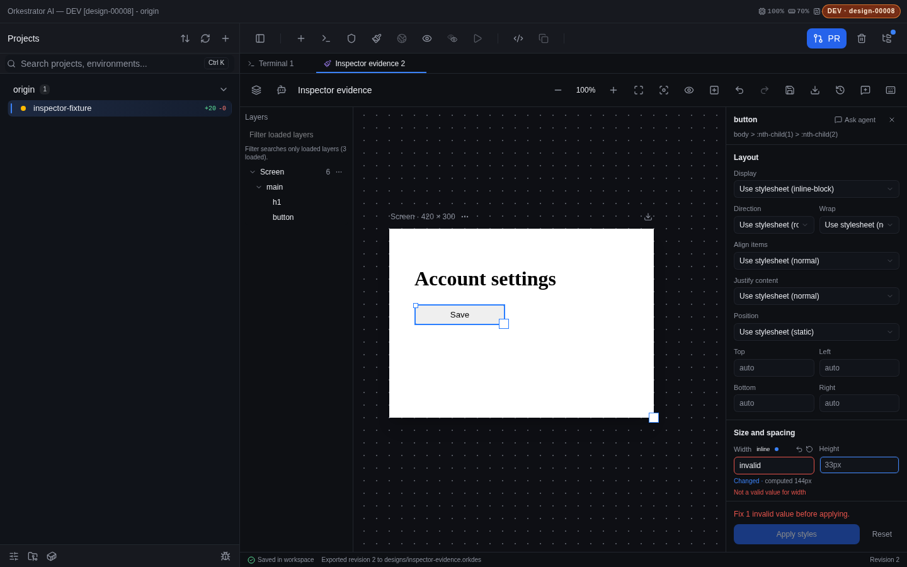
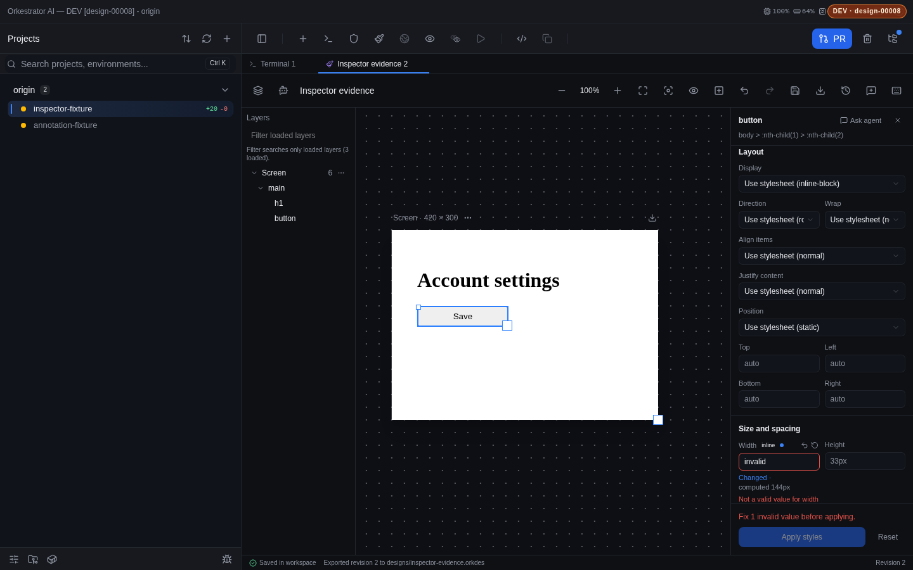
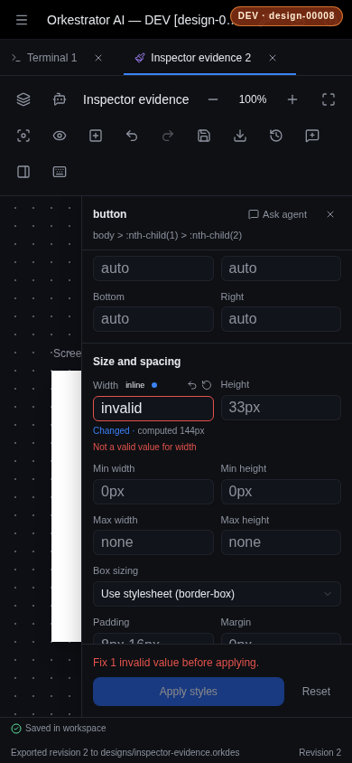
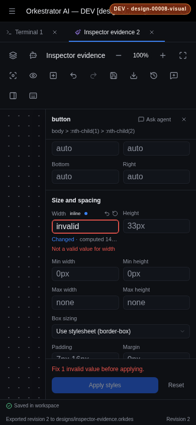
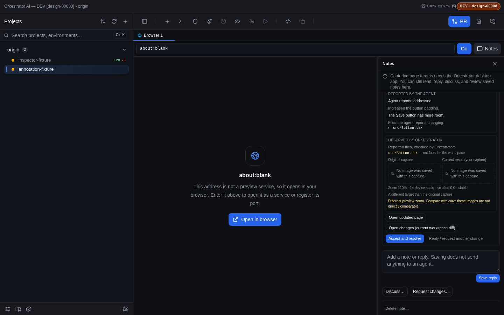
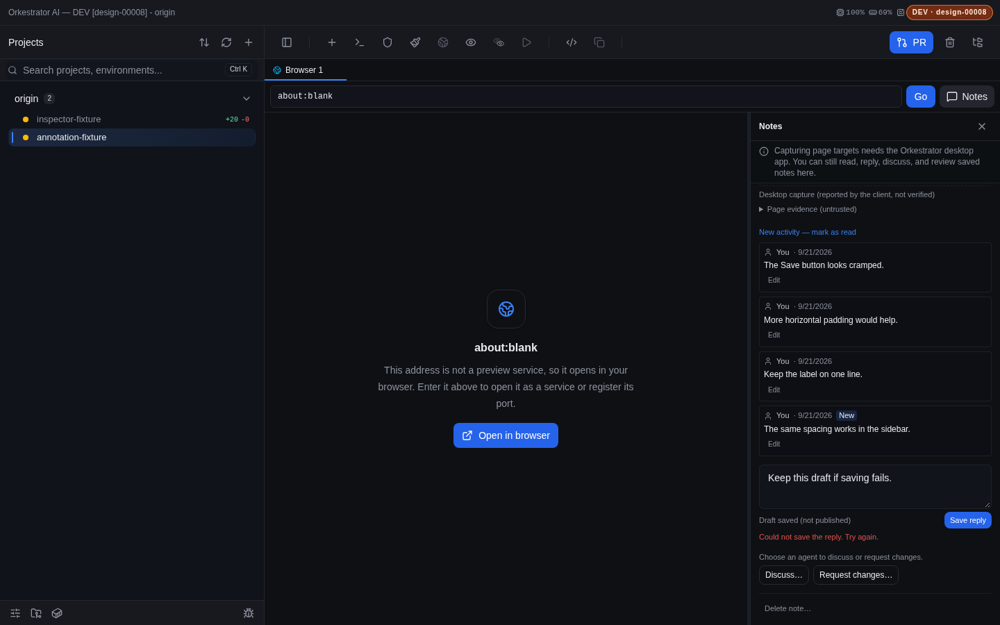

Design tasks / 00008
00008 · Raise error and state text to 11px in the design inspector and annotations
Problem
The baseline had 165 uses of text-[10px]. Many are legitimate metadata or
counts inside filled pills, but error lines and state text are not:
DesignFrameInspector.tsx:202, DesignInspector.tsx:622 and
DesignStyleField.tsx:282 set errors at 10px in the destructive red. The
annotation panels used the same size for result and state lines.
muted-foreground. The one deliberate exception is message metadata (model
name and time), which stays 10px and faded by design.
Find every instance
grep -rnE --include=*.tsx "text-\[10px\]" apps/web/src/components/design apps/web/src/components/browser/annotationsScope
| Where | What |
|---|---|
apps/web/src/components/design/DesignFrameInspector.tsx:202 |
error line |
apps/web/src/components/design/DesignInspector.tsx |
new-property error and truncation notices |
apps/web/src/components/design/DesignStyleField.tsx |
computed value, property error, and field note |
apps/web/src/components/browser/annotations/ResultReview.tsx |
9 uses |
apps/web/src/components/browser/annotations/AnnotationThread.tsx |
5 uses |
apps/web/src/components/browser/annotations/AnnotationEntries.tsx |
4 uses |
Approach
- For each 10px use in these files, classify it in Notes: metadata (keep), count in a filled pill (keep) or state or error (raise).
-
Raise state or error text to
text-[11px]inmuted-foregroundor its semantic color. Remove any alpha fade on it. - Check the inspector’s 8px grid and row heights after the change so it does not wrap awkwardly.
Required evidence: before and after
Every slot needs a before image (captured first, before editing any code) and an
after image. Use the same profile, fixture data, theme, viewport and zoom for both.
Save PNGs under design/images/00008/ using the exact file names shown. See
How to capture.
Design inspector with a property error desktop 1440×900
Enter an invalid value in a design style field.


Design inspector with a property error narrow 390×844
Enter an invalid value in a design style field.


Annotation result review desktop 1440×900
Open a completed annotation request’s result review.

Annotation thread desktop 1440×900
Open a thread with a few replies and a failed reply.

Out of scope
- Agent info panels and other 10px text (task 00009).
- 9px badges (task 00010).
Verification
mise run test:logged -- --name web-typecheck -- bun run --cwd apps/web typecheck
NODE_ENV=test mise run test:logged -- --name design-annotations -- bun test --cwd apps/web ./src/components/design ./src/components/browser/annotations --parallel=2 --only-failures
mise run test:logged -- --name inspector-layout -- bun scripts/loopback-network.ts --free-port ORKESTRATOR_E2E_PORT -- bunx playwright test --config e2e/playwright.config.ts e2e/DesignCanvas.spec.ts --grep 'long computed width' --workers=2
mise run format:check
mise run lint
React tests in this repo need NODE_ENV=test in build shells. Real-browser
check: use an isolated fixture profile, such as design-00008-visual.
env -u DISPLAY -u WAYLAND_DISPLAY ORKESTRATOR_HOST_REACHABILITY_CHECK=off mise run dev:test --profile design-00008-visual --fixture --headless --no-host-seed --no-agent-credentials --agent-platforms codex
The captures use the dark theme at 100% app zoom and device scale 1. The refreshed inspector
and result-review pairs use the same isolated profile and fixture data per pair. The before
captures loaded the affected renderer modules from baseline 259e88d90. Both
inspector captures at each width select Save and show the invalid Width draft at 100% canvas
zoom. The original annotation-thread pair uses baseline b2c91abb9
and a blocked reply-save request to show the recoverable error.
Acceptance checklist
-
Before images captured with the baseline renderer code for every slot above, and
committed under
design/images/00008/. - After images captured after the change, with the same profile, data, theme, viewport and file names, and committed beside the before images.
- Every image slot on this page shows a picture (the evidence badge reads “8 / 8”).
- I have looked at each pair and written what changed, and anything that did not change that should have, in Notes.
- Hits were classified in Notes, and each decision below is recorded with the option chosen.
-
Type-check and the owning tests pass (commands above);
mise run format:checkandmise run lintpass. - The browser check includes a page reload and, for layout-affecting changes, the narrow viewport.
- DESIGN.md or PRODUCT.md updated if needed: If a new exception is accepted (for example a count in an outlined pill), add it to Typography.
- Status set to Done on this page and in the index.
Notes
Hit classification
DesignFrameInspector— geometry validation error (state/error, 11px).-
DesignInspector— new-property validation error, truncated-text notice, and truncated-attributes notice (state/error, 11px). -
DesignStyleField— computed and changed value, validation error, and field note (state/error, 11px). -
ResultReview— capture captions, zoom, device scale, scroll, redaction count, report and observation headings, and reported file paths (metadata, 10px). Capture stability, target match, and comparison warnings are states at 11px. In each observed file-check row, the path uses 10px and the outcome uses 11px. -
AnnotationThread— legacy reference text, captured attributes, styles, and HTML, and source candidate location (evidence metadata, 10px). The status alongside a source location already uses 11px. -
AnnotationEntries— bothNewmarkers are unread state (11px). TheEditandOpen conversationlabels identify actions (10px, outside the state and error change).
Decisions
- Change individual inspector and annotation states at their existing locations. A blanket replacement would also enlarge evidence metadata and action labels. Result-review states use 11px, including stability within the 10px capture measurements.
- Keep the Changed marker and computed value on a single line. Long computed values can truncate within the remaining space. The complete value is available in the field’s accessible description and in the status tooltip.
-
Treat
Newas state even on a filled background because it tells readers which entries are unread. No numeric filled-pill counts were found among the hits. Existing semantic colors are used at the same opacity, and no palette values changed.
Image pairs
- Inspector, desktop. The invalid width message and computed value are larger. The Changed marker and computed value share one line, and the error fits on one line. Apply styles stays disabled.
- Inspector, narrow. The 390px layout keeps the same grouping of the Changed marker, computed value, and single-line error. The two-column grid retains its 8px gap at both widths.
- Annotation result review, desktop. The missing-file outcome, target-match line, and zoom mismatch warning are larger. The warning wraps within the Notes panel. Stable and unstable use 11px alongside the 10px capture measurements. The saved result fixture contains comparison metadata without image assets.
-
Annotation thread, desktop. The unread
reply’s
Newbadge is larger. The reply-save failure was already 11px and stays readable below the retained draft.